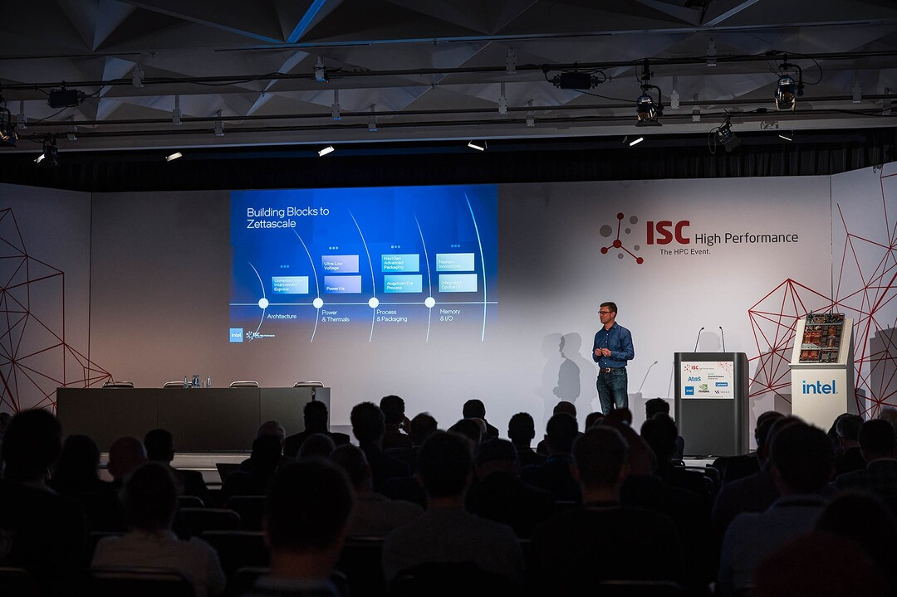

Intel research and collaborations in thermal technologies help extend Moore’s Law and improve sustainability of data centers.
Extending Moore’s Law means putting more transistors on an integrated circuit and, increasingly, adding more cores. Doing so improves performance but requires more energy.
Over the past decade, Intel estimates it has saved 1,000 terawatt hours of electricity through the improvements its engineers have made to processors. These advances are complemented by cooling technologies – fans, in-door coolers, direct-to-chip cooling – that further manage heat, conserve energy and reduce carbon emissions.
These cooling features require up to 40% of a data center’s energy consumption1. As Intel looks to increase performance in the future, improvements need to be accomplished in an energy-efficient way, and air cooling may not be the solution.
Fortunately, Intel is working with the liquid cooling industry – from tank vendors to fluid providers to its own labs – to create innovative solutions where computing components are in direct contact with a heat-conducting fluid. Some of the solutions seem squarely in the realm of science fiction, like 3D vapor chambers embedded in coral-shaped heat sinks. Or tiny jets, adjusted by artificial intelligence, that shoot cool water over hot spots in the chip to remove heat. All are being explored in thermal labs at Intel.
Disruption in the Data Center
According to a 2022 International Energy Agency study, global data center electricity use in 2021 was 220 to 320 terawatt hours, or around 0.9% to 1.3% of global electricity demand.
Increases in energy use by data centers and the world’s top supercomputers has brought liquid cooling from fantasy to fringe technology to on-the-verge-of-mainstream.
Intel has been supporting immersion cooling for over a decade, and for good reason: The path to sustainable data centers and exascale supercomputers requires a revolution in cooling to accommodate more powerful processors.
“Intel: ‘The Time is Now’ for Immersion Cooling,” read a Data Center Frontier headline from Oct. 26, 2022. At the Open Compute Summit that day, Intel’s Zane Ball discussed the growing focus on immersion cooling and announced that Intel would partner with the Open Compute Project and cooling vendors to develop standards to make the technology more accessible.
“People have talked about liquid cooling for a long time,” said Ball, corporate vice president and general manager of Data Center Engineering and Architecture. “It’s always that thing we’re going to do in the future. We believe we’ve reached a time where liquid cooling must play a much bigger role in the data center.”
In 2021, Intel announced a collaboration with Submer, an industry leader in immersion cooling, to work on Submer-cooled Intel® Xeon® processors in data centers. In January 2022, Intel announced an agreement with Green Revolution Cooling (GRC) to design and implement custom cutting-edge immersion cooling techniques in future data centers and edge deployments. Also in 2022, Intel delivered an industry-first immersion warranty rider for Intel Xeon processors and won its first sustainability deals over competition with large global customers, including Microsoft and Alibaba.
Sustainability Drives Design
Immersion cooling is part of Intel’s net-zero commitments. As much as 99% of heat generated by IT equipment can be captured in the form of water or another liquid coolant. Instead of requiring fans, the heat passes into the fluid, which is then circulated to dissipate the energy, much like an air conditioning system. That heat can even be harnessed and reused as needed.
“Immersion cooling is a disruptive technology,” said Jen Huffstetler, chief product sustainability officer in Intel’s Data Center and AI Group (DCAI). “This technology not only addresses some of the largest data center challenges – by reducing energy and water usage – it also helps our customers improve TCO (total cost of ownership) while improving overall compute density.”
Disruptive solutions need to be innovative, but also market-ready, executable and testable. Intel will partner with startups and academic leaders on these technologies, with the goal of developing open solutions over the next five years that Intel – and the world – can use to reduce the energy footprint of data centers.
New Materials and Structures for Cooling
Intel researchers are developing novel solutions to support the power and thermal management needs of next-generation architectures, including devices up to 2 kilowatts.
Among the solutions they are looking at are 3D vapor chambers (sealed, flat metal pockets filled with fluid) to spread the boiling capacity using minimal space and improved boiling enhancement coatings, which reduce thermal resistance by promoting high nucleation site density (where bubbles of steam form on a metal surface).
Boiling is one of the most effective methods to cool high-power electronic devices and maintain a uniform temperature distribution. Boiling enhancement coatings made of advanced materials can facilitate effective nucleate boiling. Today, these are applied on a flat surface, but research shows a coral-like heat sink design with internal groove-like features has the highest potential for external heat transfer coefficients with two-phase immersion cooling.
Intel envisions these ultra-low thermal resistance 3D vapor chamber cavities integrated within coral-shaped immersion cooling heat sinks created using additive manufacturing.
Another approach Intel researchers are pursuing uses arrays of fluid jets to cool the highest-power devices. Unlike typical heat sinks or traditional cold plates that pass fluid over a surface, the cooling jets route fluid directly at the surface. The thermal lid that contains the jets can be attached directly to the top of a standard lidded package, eliminating thermal interface material and reducing thermal resistance. With multi-chip modules becoming increasingly difficult to cool, this technology can be customized for each construction and can target hot spots effectively, enabling the processor to run at a lower temperature with a 5% to 7% increase in performance for the same power.
From its processor designs to the data center system level, Intel remains focused on extending Moore’s Law while increasing energy efficiency.
“Enabling and innovating aggressive and scalable thermal technologies is the need of the hour to align with the exponential increase in power expected by processors over the next decade,” said Tejas Shah, lead thermal architect for Intel’s Super Compute Platforms group. “Intel is at the vanguard of improving and standardizing this technology, which is existentially important for our future.”
1 “The Sustainable Data Center Transformation: Reducing Carbon Footprint with Liquid Immersion Cooling"
Tags
About Intel
Intel (Nasdaq: INTC) is an industry leader, creating world-changing technology that enables global progress and enriches lives. Inspired by Moore’s Law, we continuously work to advance the design and manufacturing of semiconductors to help address our customers’ greatest challenges. By embedding intelligence in the cloud, network, edge and every kind of computing device, we unleash the potential of data to transform business and society for the better. To learn more about Intel’s innovations, go to newsroom.intel.comand intel.com.
© Intel Corporation. Intel, the Intel logo and other Intel marks are trademarks of Intel Corporation or its subsidiaries. Other names and brands may be claimed as the property of others.


{kind=link}